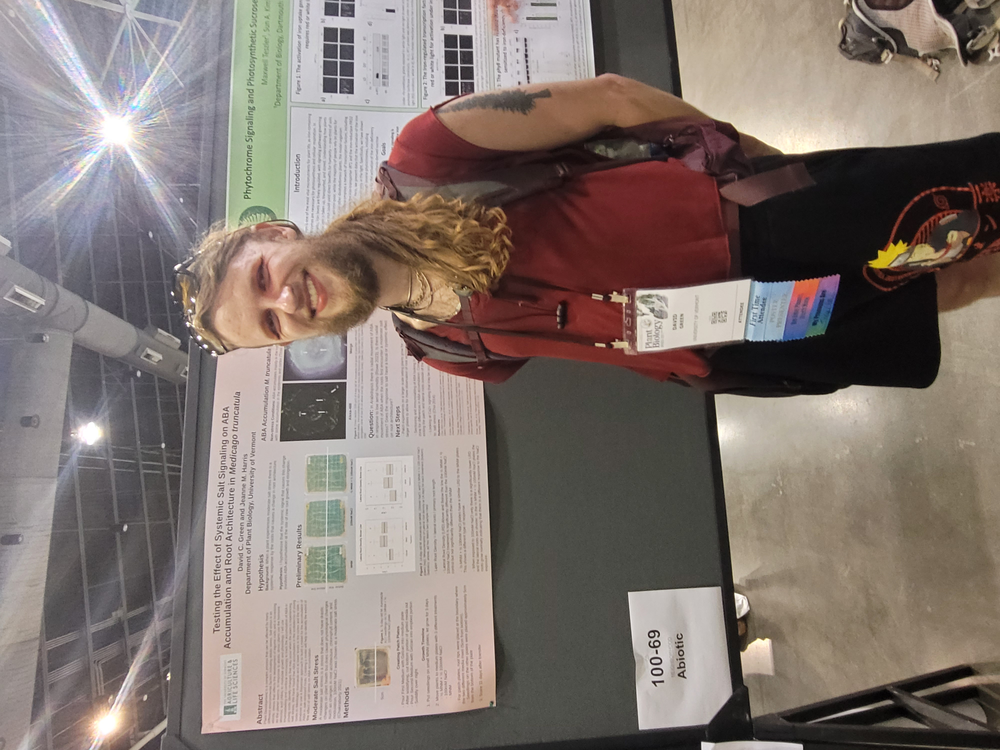

A little about meI am a graduate student working on myh Phd in Plant Biology at the University of Vermont (UVM). I did my undergraduate also at UVM graduating with BS in Plant Biology. I have always lived in the Northeast, hailing originally from Massachusettes. I enjoy time in nature taking hikes, and exploring the northern kingdom. I love music, listening and creating. Besides what I do for work I enjoy working with computer both on the hardware end and the software end. I like automating tasks and creating tools to help in everyday tasks as well as in my work. I am not as adept on the hardware size. I have buildt computers but am more of a tinkerer than an engineer. Mostly I just like creating things, enjoying the process of creating as well of the satsifaction of finishing a project. My workI currently work in the Harris lab working on my thesis project that takes a genomic approach to answering questions about how evolutionary paths of Medicago truncatula affect differnent accessions ability to withstand environmental changes. Using the sequencing has been done on M. truncatula fomr the HapMap prject ( Yoder 2014 ) we can take a computational approach to understand changes in different accessions genomes to understand the types of selection that has taken place and if it is benificial or maladaptive towards future changes in the environment. I will be developing tools to help facilitate this first part of my project. You can find these tools in the Tools section. Once we have our model and predictions on relevant changes in the genomes based on differnt environmental conditions we will test our predictions in the lab. I don't have to much insight into this part of the project yet as I have just started and will need to get results from the first part of the project to inform my next steps. |

ASPB 2023 |